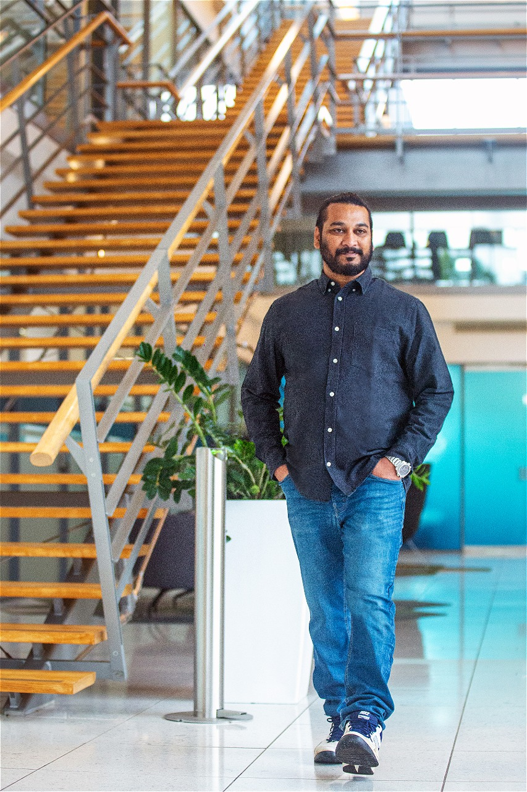

CORPORATE SOCIAL RESPONSIBILITY
MAI initiates a holistic approach to community well-being by extending its “Family Counselling Services” to the general public, fostering mental health and support for families in need through its project SAB.
Our Founder’s Vision

"Live a Life That Makes a Difference”
Our founder GMS lives by the principle, "Live a Life That Makes a Difference”. His vision to start mental health support as a social cause stems from a combination of personal experiences, empathy, and a recognition of the pressing societal need for better mental health care. GMS likely recognized that there is a considerable unmet need for external assistance through professional counselling within the community or society at large. His ideal thoughts convey that personal experiences with conditions like anxiety, depression, or other mental health issues can deeply impact one’s perspective about life. His vision is driven by a strong commitment to making a positive and lasting impact on the lives of individuals and families while reducing the stigma associated with mental health issues within family surroundings.
MAI’s Vision Statement:


To cultivate a society where mental health thrives, our vision is to empower individuals and families, fostering a resilient community where every person can lead a fulfilling life with dignity and understanding
Mission Statement :

Our mission is to provide accessible, compassionate, and holistic counselling services that strengthen family bonds, promote individual well-being, and eradicate the stigma associated with mental health issues. We are dedicated to achieving our vision with family counselling as a paramount focus.
Objectives :


- Ensure that family counselling services are easily accessible to individuals and families, removing barriers such as financial constraints or geographical limitations.
- Provide comprehensive mental health support that addresses the diverse needs of families, including emotional, psychological, and relational aspects.
- Tailor family counselling services to be culturally sensitive and inclusive, recognizing and respecting diverse backgrounds and belief systems.
- Develop and implement programs that focus on early identification and intervention within families to prevent escalation and promote timely support.
- Offer workshops and resources to enhance family members' coping skills, communication, and conflict resolution abilities, contributing to the overall well-being of the family unit.
- Establish measurable objectives and evaluation criteria to assess the effectiveness of family counselling interventions, continually refining and improving services based on feedback and outcomes.
SAB provides services :

1. Help-Line Services:
Establish a dedicated helpline offering maximum support for individuals and families in need of immediate assistance, guidance, or crisis intervention.
2. Well-Trained Counselling Professionals:
Our Professionals will extend their support for individuals and families in need of immediate assistance, guidance, or crisis intervention.
3. Information or Referral Services:
We shall facilitate appropriate referrals based on the client’s needs. Also offer information about available mental health resources and community support organisations.
4. Follow-up Support:
Implement a system for follow-up calls to individuals and families who have reached out to the helpline, providing ongoing support, monitoring progress, and offering additional resources if needed.
5. Public Service Announcements (PSAs):
Create and disseminate PSAs through various media channels to inform the public about the helpline services, encouraging individuals and families to seek assistance when needed.
Join hands with us to “Build Strong Families”

Inviting Applications
Professionally Licensed and Experienced Counsellors:
- Engage in one-on-one and family counselling sessions.
- Contribute to the development of personalised counselling plans.
- Be part of a support system for families in crisis

Established Non-Governmental Organisations

We support you
We welcome applications from NGOs that share our vision of supporting families through counselling services.
Collaborating with MAI provides NGOs with the chance to:
1. Develop a holistic proposal:
Craft a detailed proposal that outlines the need for family counselling services, and the specific services the NGO can offer. Highlight how family well-being contributes to a positive work environment.
2. Flexible Counseling Options:
Offer a range of counselling options, including individual, couples, and family counselling sessions. Flexibility in service delivery can accommodate diverse employee needs.
3. Information or Referral Services:
We shall facilitate appropriate referrals based on the client’s needs. Also offer information about available mental health resources and community support organisations.
4. EAPs with Family Focus:
Enhance or introduce Employee Assistance Programs (EAPs) that specifically address family-related concerns. Also ensure that employees are aware of these services and how to access them.
5. Measurable Outcomes:
Define key performance indicators (KPIs) to measure the success of the family counselling services. This may include tracking satisfaction levels, and the resolution of family-related issues.
6. Long-Term Collaboration:
Aim for long-term collaboration with companies to establish continuity in family counselling services. Regularly assess and adapt services based on feedback and changing needs.